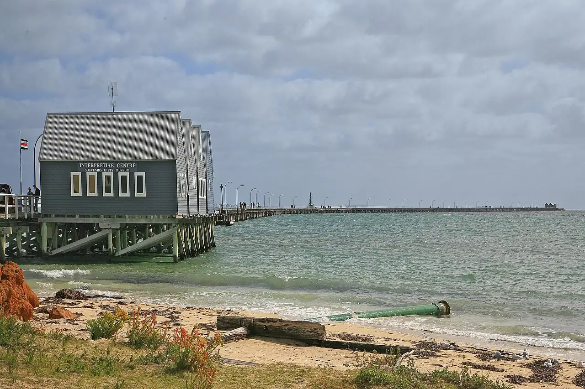

Busselton Jetty
Australie-Occidentale, Australie · snorkeling, plongée

Longue jetée en bois qui s’avance dans la baie calme de Geographe Bay. Ses piliers sont couverts de coraux mous et d’éponges colorées, avec un observatoire sous-marin tout au bout.
- Lieu
- Australie-Occidentale, Australie
- Niveau
- Débutant
- Activités
- snorkeling, plongée
- Type d'eau
- Mer / océan
- Coordonnées
- -33.64, 115.34 (position approximative du secteur)
Dangers à connaître
- Bateaux à proximité de la jetée : reste dans les zones autorisées.
- Houle et courant possibles au bout de la jetée par vent fort.
Le conseil d'Ocean Buddy
L’accès à la jetée est payant : renseigne-toi sur les règles et les sorties guidées pour plonger ou snorkeler sous la jetée.
Ouvrir dans Ocean Buddy Télécharger sur l'App Store
Source : Fiche Ocean Buddy · septembre 2026 · à vérifier localement.